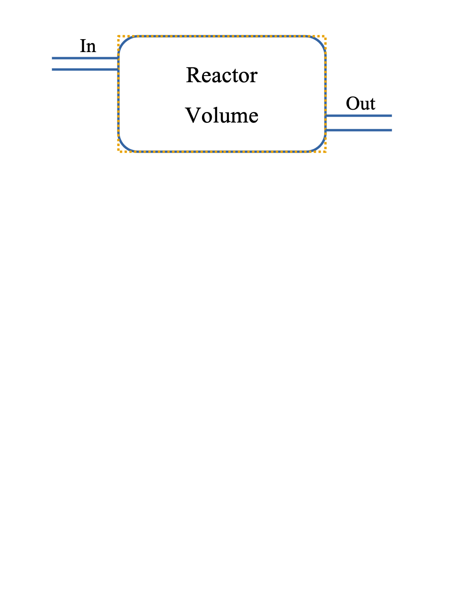

How Did You Think
I Would React?
DOFPro Team

Types of Reactor Models
Extent of Reaction and Fractional Conversion
- \(\dot{\xi}\), \(\xi\), and \(f_\mathrm{A}\) are treated as parameters that are either given or calculated from other given information.
- Does not deal directly with either chemical kinetics or chemical thermodynamics
Chemical Equilibrium
- Assumes reaction reaches equilibrium
- \(\dot{\xi}\), \(\xi\), and \(f_\mathrm{A}\) are determined by temperature, pressure, and feed concentrations
Types of Reactor Models (cont.)
Homogeneous Chemical Kinetics
- Starts with the three idealized chemical reactors
- Batch
- CSTR (mixed or stirred tank)
- PFR (Plug Flow Reactor)
- Uses chemical-kinetics expressions such as \(-r_\mathrm{A} = kC_\mathrm{A}^n\)
- \(\dot{\xi}\), \(\xi\), and \(f_\mathrm{A}\) are determined by the kinetic expression, feed conditions, reactor volume, and temperature.
Types of Reactor Models (cont.)
Heterogeneous Chemical Kinetics
- Typically two or more phases, Gas-Solid, Liquid-Solid, or Gas-Liquid
- Catalyzed reactions are the most common
- Requires simultaneous solution of chemical-kinetic, mass-transfer, heat-transfer, and fluid-flow equations
- \(\dot{\xi}\) and \(f_\mathrm{A}\) are determined by the kinetic expression, catalyst amount, particle sizes, feed conditions, reactor volume, and temperature.
A Single Chemical Reaction
\[ \nu_\mathrm{A} \mathrm{A} + \nu_\mathrm{B} \mathrm{B} + \cdots \rightarrow \nu_\mathrm{P} \mathrm{P} + \nu_\mathrm{S} \mathrm{S} + \cdots \]
\[ \sum \nu_i \mathrm{A}_i = 0 \]
\(\nu_i\) – stoichometric coefficient for component \(i\).
\(\nu_i\) is positive for products (right side) and negative for reactants (left side).
Reaction Rate
\(\ \ \ \ r \equiv \frac{1}{\nu_i} \frac{1}{V} \frac{dn_i}{dt}\)
\(\ \ \ \ r_i = \nu_i r\)
Individual Reaction Rates
\(\ \ \ \ r_\mathrm{A} \equiv \frac{1}{V} \frac{dn_\mathrm{A}}{dt} = \nu_\mathrm{A} r\)
\(\ \ \ \ r_\mathrm{B} \equiv \frac{1}{V} \frac{dn_\mathrm{B}}{dt} = \nu_\mathrm{B} r\)
\(\ \ \ \ r_\mathrm{P} \equiv \frac{1}{V} \frac{dn_\mathrm{P}}{dt} = \nu_\mathrm{P} r\)
\(\ \ \ \ r_\mathrm{S} \equiv \frac{1}{V} \frac{dn_\mathrm{S}}{dt} = \nu_\mathrm{S} r\)
Constant Density Reactors
If the mass density, \(\rho\) doesn’t change appreciably during reaction (e.g., aqueous solutions), or the total number of moles is fixed, i.e., \(\nu = \sum \nu_j = 0\), or a batch rector is a fixed volume, then
\(\ \ \ \ \frac{1}{V} \frac{dn_\mathrm{A}}{dt}\)
can be written as
\(\ \ \ \ \frac{1}{V} \frac{dn_\mathrm{A}}{dt} = \frac{d}{dt}\left(\frac{n_\mathrm{A}}{V}\right) = \frac{dC_\mathrm{A}}{dt}\)
or
\(\ \ \ \ r_\mathrm{A} = \frac{dC_\mathrm{A}}{dt}\)
Note
We will limit ourselves to constant density reactors for most of the DOFPro videos. The videos that delve deeper into chemical reactor engineering will relax this constraint.
Extent of Reaction
The reaction rate can vary with position. The extent of reaction is for the reactor as a whole, so the reaction rate is integrated over the reaction volume to get the extent.
\(\ \ \ \ \xi = \frac{n_i - n_{i_0}}{\nu_i}\)
\(\ \ \ \ \dot{\xi} = \frac{\dot{n}_i - \dot{n}_{i_0}}{\nu_i}\)
\(\ \ \ \ \frac{d \xi}{dt} = \frac{1}{\nu_i} \frac{dn_i}{dt}\)
\(\ \ \ \ r = \frac{1}{\nu_i} \frac{1}{V} \frac{dn_i}{dt} = \frac{1}{V} \frac{d \xi}{dt}\)
Multiple Reactions
\[ n_i = n_{i_0} + \sum_{j=1}^J \nu_{ij} \xi_j \]
\[ \dot{n}_i = \dot{n}_{i_0} + \sum_{j=1}^J \nu_{ij} \dot{\xi}_j \]
Fractional Conversion
\[ f_k = \frac{n_{k_0} - n_k}{n_{k_0}} \]
\[ f_k = \frac{\dot{n}_{k_0} - \dot{n}_k}{\dot{n}_{k_0}} \]
\(r\) as a Function of \(T\) and \(C\)
In general, \(r\) varies as a function of \(T\) and \(C\) or \(\hat{a}\) (activity).
\[r=r(T,\ C_\mathrm{A},\ C_\mathrm{B},\ \dots)\]
e.g.
\[ r = k C_\mathrm{A}^n C_\mathrm{B}^m \]
\[ k = k_0 e^{\frac{-E_a}{RT}} \]
Kinetic Expressions
Experimentally and from theoretical considerations, a reaction such as \(\nu_\mathrm{A} \mathrm{A} + \nu_\mathrm{B} \mathrm{B} = \nu_\mathrm{P} \mathrm{P} + \nu_\mathrm{Q} \mathrm{Q}\) follows a rate law such as
\[ r = k_f C_\mathrm{A}^n C_\mathrm{B}^m - k_r C_\mathrm{P}^p C_\mathrm{Q}^q \]
where \(k_f\) and \(k_r\) are the forward and reverse rate coefficients respectively.
The exponents \(n\), \(m\), \(p\), and \(q\) are known as the order of reaction with respect to the reactants \(\mathrm{A}\), \(\mathrm{B}\), \(\mathrm{P}\), and \(\mathrm{Q}.\)
They are not necessarily the same as the stoichiometric coefficients \(-\nu_\mathrm{A}\), \(-\nu_\mathrm{B}\), \(\nu_\mathrm{P}\), and \(\nu_\mathrm{Q}\).
Kinetic Expressions (cont.)
For an irreversible reaction the overall order of reaction is the sum of the exponents e.g., if \(n = 1\), and \(m = 2\) then the forward reaction is first order in \(\mathrm{A}\), second order in \(\mathrm{B}\) and overall third order.
A reaction does not have to have an integral order (i.e., \(n\), \(m\), etc. do not have to be integers) but non-integral orders imply a complex mechanism for the reaction.
Yes, we know that using \(n\) for both number of moles, and order of reaction is confusing. That’s just how it’s done. Deal with it.
Did we mention that \(C\) is concentration, and \(\mathrm{C}\) is species \(\mathrm{C}\) as well as carbon? It’s similar to why the main streets in Boston don’t have street signs. It’s obvious what street you’re on and if it isn’t, you don’t belong here.
Temperature Dependence
The rate coefficients, \(k_f\) and \(k_r\), are functions of temperature. Both collision theory and transition-state theory provide models, but experimental data are rarely accurate enough to use anything other than the Arrhenius expression:
\[ k = k_0 e^{\frac{-E_a}{RT}} \]
where \(k_0\) is known as the frequency factor or the pre-exponential and \(E_a\) is known as the activation energy.
For ideal gases, the concentration,
\[C = \frac{n}{V} = \frac{P}{RT}\]
is a weak function of temperature, as well.
Mole Balance on Reactor

\(V_R\)
General Balance Equation
\(\ \ \ \ \mathrm{In - Out + Generation = Accumulation}\)
\(\ \ \ \ \dot{n}_{j_0} - \dot{n}_j + \mathrm{Gen}_j = \dfrac{dn_j}{dt}\)
\(\ \ \ \ \mathrm{Gen}_j = \int_{V_R} r_j dV,\ \ \ \ r_j = \nu_j r\)
\[ \dot{n}_{j_0} - \dot{n}_j + \int_{V_R} r_j dV = \frac{dn_j}{dt} \]
The next video will develop this expression for the Batch, CSTR, and PFR reactors.
The Takeaways
- The fractional conversion and extent of reaction can be specified as parameters, determined from chemical kinetics, or determined from chemical equilibrium depending on the need.
- The reaction rate, \(r\), is independent of species, and the reaction rate for species \(i\) is given as \(r_i = \nu_i r\).
- The extent of reaction, \(\dot{\xi}\), is the volume integral of the reaction rate, \(r\).
- The general mole balance for a reactor is \[\dot{n}_{j_0} - \dot{n}_j + \int_{V_R} r_j dV = \frac{dn_j}{dt}\]
Thanks for watching!
The previous video is in the link in the upper left. The next video in the series, is in the upper right. To learn more about Chemical and Thermal Processes, visit the website linked in the description.